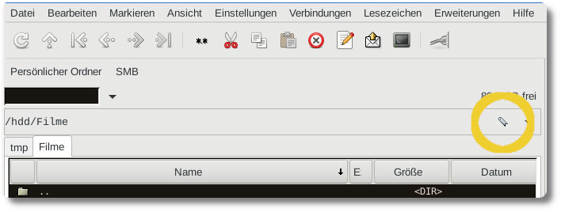

Gnome Commander Lesezeichen per Tastenkombination öffnen
Im Dateimanager Gnome Commander für Linux
kann man einstellen, dass man mit einer einzigen Tastenkombination in
ein Verzeichnis auf der Festplatte springt. Das ist nützlich, wenn man
immer wieder das selbe Verzeichnis benötigt, z.B.
/home/user/arbeit/mathe/klassenarbeiten. Wie man das einstellt,
erkläre ich hier in zwei einfachen Schritten:
Zuerst muss man sich ein Lesezeichen zu dem gewünschten Verzeichnis erstellen. Dazu öffnet man im Gnome Commander zuerst das gewünschte Verzeichnis. Als nächstes klickt man in der Menüleiste auf "Lesezeichen -> Ordner zu Lesezeichen hinzufügen...". Es öffnet sich ein Popup-Fenster, in dem man einen Namen für das Lesezeichen angeben muss. Diesen benötigt man in Schritt 2. Im unteren Textfeld wird noch einmal der Pfad zu dem Lesezeichen angezeigt. Man klickt nun auf "OK". Das Lesezeichen wurde erstellt.
Nun muss man das Lesezeichen mit einer Tastenkombination verknüpfen. Dazu klickt man in der Menüleiste auf "Einstellungen -> Tastenkombinationen...". Es öffnet sich ein Popup-Fenster mit einer Tabelle der voreingestellten Tastenkombinationen. Hier klickt man oben rechts auf "Hinzufügen". Dies fügt eine leere Zeile in der Tabelle hinzu. Um die gewünschte Tastenkombination einzustellen, muss man diese nun auf der Tastatur drücken, also z.B.
Strg+Shift+M. Dies wird in Spalte 1 übernommen. Jetzt muss man angeben, was passieren soll, wenn diese Tastenkombination gedrückt wird. Dazu klickt man mit der Maus in die mittlere Spalte und wählt "Zum angegebenen Ort gehen" aus. Und schließlich muss in das Textfeld "Optionen" ganz rechts der Name des Lesezeichens aus Schritt 1 eingegeben und mitEnterbestätigt werden. Damit ist man fertig und kann auf "OK" klicken.
Jetzt kann man von jedem anderen Verzeichnis heraus mit der Tastenkombination zu dem Lesezeichen springen.
Die erstellten Lesezeichen kann man auch sehen, wenn man auf das gelb eingekreiste Icon klickt:
